结论先行：市场温和上涨，创业板 +3.11%、科创50 +2.8% 领涨，但指数级仍属弱势——上证 15 分钟下跌中枢 3664.4–3689.91 继续延伸，向上未破 3750，向下今日最低 3650.31 已微幅跌破 11/09 前低 3653.05，「创新低」条件在尾盘前的日内已经触发，收盘 3680.64 拉回中枢内；1 分钟中枢尝试向上离开但力度不够。市场温度由 25 度升到 35 度，人形机器人升为一类热点。总仓位上限 4 成、谨慎不追涨；中线扩到 8 只（新增中文在线、海天瑞声转中线、奥普特、柯力传感），短线只剩 2 只，全部不给买点，仅给触发条件与止损位。
本期实测与老师口径有三处不一致：① 当日涨幅与涨停家数最强的是算力硬件（篮子均值 +7.08%、涨停链 35 只）而非人形机器人（+2.31%、28 只）；② 「端侧 AI 比超跌半导体更强」在自建篮子口径上相反（端侧 -0.96% ＜ 半导体 +1.61%），仅在老师点名的瑞芯微（+0.78%）上成立；③ 同花顺全A 的 1325 点本机无数据源，无法核验。
实测：上证 +0.46% 收 3680.64（高 3689.65 低 3650.31），深成指 +1.32%，创业板指 +3.11%、科创50 +2.80%，沪深300 +0.41%。「创业板和科创板涨幅力度稍大、结构本身没有大的变化」成立：涨幅集中在成长端，权重与主板几乎没动（沪深300 仅 +0.41%）。
全 A 成交额 16886.9 亿，较前一日 15167.5 亿放量 11.3%——「成交量略放」成立。但均量线仍空头排列：上证 5 日均量 462,808,343 手 < 20 日均量 470,975,150 手（判定「空头排列」），即短期成交量虽回升，中期均量趋势仍未扭转。
涨跌家数 3538 / 1827（平 209），中位数 0.593%，涨幅≥9.8% 共 118 只、跌幅≤-9.8% 共 6 只。较 11/10（4273 涨 / 1149 跌）宽度有所收敛，涨停级从 134 降到 118、跌停级从 1 升到 6——指数上涨但个股参与度下降，这是老师把行情定性为「温和上涨、结构没大变化」的盘面依据。
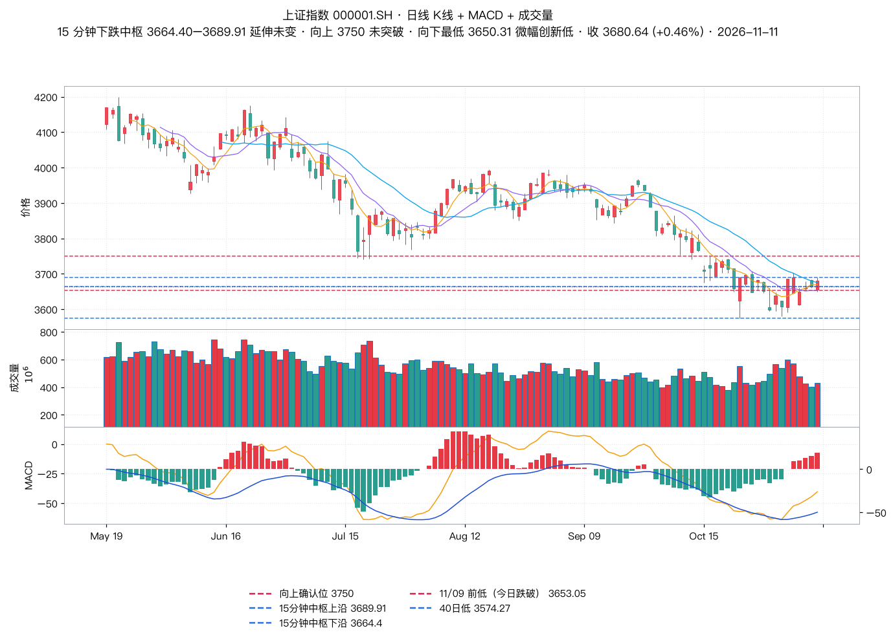
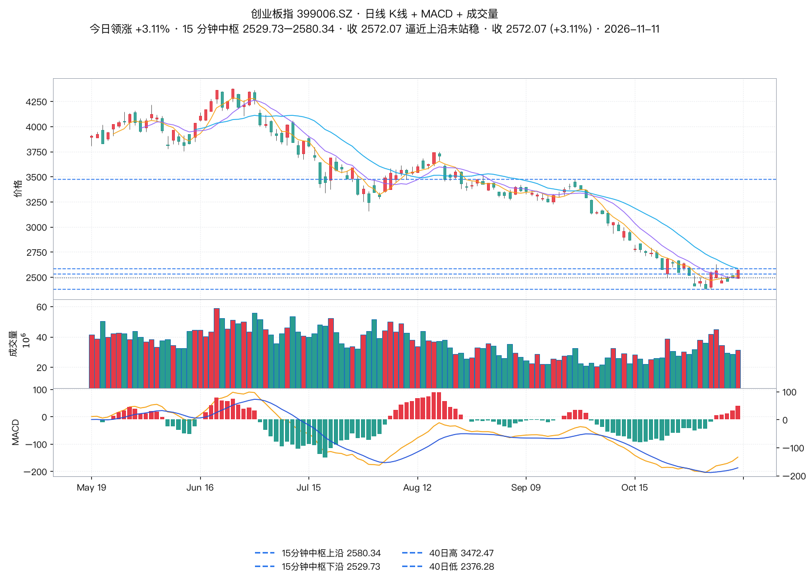
| 方向（我方测算篮子） | 样本均值 | 中位数 | 上涨/样本 | 涨停级家数 |
|---|---|---|---|---|
| 算力硬件 | +7.08% | +5.51% | 11 / 11 | 3 |
| 人形机器人 | +2.31% | +2.02% | 14 / 18 | 0 |
| 半导体 | +1.61% | +1.71% | 6 / 8 | 0 |
| AI视频/传媒 | +1.41% | +1.17% | 8 / 12 | 1 |
| 端侧AI | -0.96% | -0.21% | 3 / 10 | 0 |
| 光伏设备 | -2.01% | -1.83% | 2 / 7 | 0 |
| 涨停行业（申万口径，Tushare 全 A 统计） | 涨停级家数 | 主线归类 | 代表涨停个股 |
|---|---|---|---|
| 通信设备 | 17 | 算力硬件（光模块/CPO） | 新易盛、中际旭创、天孚通信、太辰光、仕佳光子、联特科技、光库科技、光迅科技、长飞光纤、剑桥科技 |
| 元器件 | 14 | 算力硬件（PCB/覆铜板）+ 散热 | 胜宏科技、深南电路、沪电股份、景旺电子、致尚科技、秋田微、南亚新材、炬光科技、中石科技 |
| 专用机械 | 13 | 人形机器人 + 液冷 + 光伏设备 | 同飞股份、杰普特、光智科技、唯科科技、佰奥智能、科瑞技术、英维克、博杰股份 |
| 汽车配件 | 10 | 人形机器人（丝杠/轴承/线控） | 德尔股份、兆丰股份、浙江世宝、岱美股份、襄阳轴承、光洋股份、新坐标、金麒麟 |
| 机械基件 | 5 | 人形机器人（减速器） | 瑞迪智驱、锋龙股份、永和智控、申科股份、宁波东力 |
| 半导体 | 4 | 算力硬件（光芯片/算力芯片） | 利扬芯片、源杰科技、长光华芯、燧原科技 |
| 互联网 / 出版业 / 影视音像 | 5 / 2 / 2 | AI 视频 / 传媒 | 凯撒文化（+10.06%）、果麦文化（+20.00%）、文投控股（+10.18%）、上海电影（+10.01%）、中信出版（+10.86%） |
| 日期 | 涨停级家数 | 涨停名单 | 「羊字辈」表现 |
|---|---|---|---|
| 11/09 | 8 | 东方新能、日出东方、东方环宇、大东方、东方海洋、东方创业、东方嘉盛、东方通信 | 三羊马 +2.29%、水羊股份 +1.30% |
| 11/10 | 4 | 东方新能、日出东方、东方环宇、大东方 | 三羊马 +4.02%、水羊股份 +1.28% |
| 11/11 | 4 | 日出东方、东方环宇、大东方、东方通信 | 三羊马 -2.57%、水羊股份 -4.15% |
老师纪律：先结合市场强弱评估仓位上限；可操作仓内分仓，持仓 3–5 只，试探性第一笔约为该股仓位的 5%；买点买、卖点卖、做好风控；中线走势没坏前建议持有，但内部会有短线回调，想好自己的买卖策略。
| 标的 | 题材 | 收盘 | 老师定性 | 15 分钟中枢（实测） | 触发条件 | 动作 |
|---|---|---|---|---|---|---|
| 药明康德 603259 | 大医药 | 148.70 (-1.06%) | 走势下跌延续，无买点、没有 15 分钟二买，当下做出窄幅震荡雏形 | 144.84–152.8 末笔向下（11-11 11:00，力度 9.79） |
结合凯莱英走势建议等共振结构；昭衍新药共振雏形出现，需等突破后的三买 实测：15 分钟末笔向下（力度 9.79），无底分型二买；收 148.7 回到中枢 144.84–152.8 内 → 窄幅震荡雏形成立。但今日共振不成立：药明康德 -1.06%，凯莱英 +0.36%、昭衍新药 0.00% |
观望（防守） |
| 中国船舶 600150 | 船舶 | 34.06 (-0.58%) | 无买点，未摆脱 15 分钟下跌中枢延伸，结构没见底止跌 | 34.1–34.34 末笔向上（11-11 13:45，力度 0.42） |
等收复上沿后做 15 分钟共振上涨中枢再找机会 实测：中枢已下移——11/10 的 [35.00–35.58] 变为 34.1–34.34；今日高 34.34（= 新中枢上沿）、低 33.92（低于下沿 34.10）、收 34.06，末笔向上但力度仅 0.42（前笔 0.46）→ 下跌中枢延续且重心下移，老师的「等收复上沿」目标位应更新为 34.34 |
观望 |
| 瑞芯微 603893 | 端侧 AI | 235.01 (+0.78%) | 无买点，日线前高上沿位置震荡，不建议追涨 | 229.61–235.68 末笔向上（11-11 14:00，力度 6.07） |
等向上突破后出日线底分型回抽确认高点 248.49 的三买；或等走势拉回中枢做共振结构 实测：中枢由 [211.28–221.00] 上移至 229.61–235.68，今日高 237.37（60 日新高）、收 235.01 在中枢内 → 「拉回中枢做共振结构」这一条今日已成立；但三买条件未成立（距 248.49 还差 5.7%）。月线中枢 159.34–233.88，月线末笔向下（2026-10-31，力度 74.54） |
不追涨 |
| 伊利股份 600887 | 大消费 / 防守 | 30.61 (-1.70%) | 无买点，加速上涨后不追，今日日线顶分型向下回调到下沿附近 | 30.74–31.2 末笔向下（11-11 14:30，力度 0.67） |
等跌破支撑 30.46 再拉回出日线有力度底分型 实测：今日最低 30.53，距 30.46 仅差 0.07 元、未跌破，收 30.61；末笔向下（力度 0.67）→ 条件未触发，仍在等。另：收 30.61 已跌破月线中枢下沿 30.90 |
等条件 |
| 中文在线 300364 | AI 视频 | 29.39 (+1.17%) | 新增，体量大、业绩不好，月线强势震荡、结构出月线底分型 | 27.75–29.83 末笔向上（11-11 14:00，力度 2.63） |
不追涨，等突破压力高点 30.38 后出 15 分钟底分型的三买 实测：今日最高 30.38 恰好触及 30.38（同时是 60 日新高），但收盘 29.39 回落 → 触及而未有效突破，假突破风险上升。15 分钟中枢上移至 27.75–29.83、末笔向上。月线中枢 18.31–27.76（收 29.39 在中枢上方）、月线末笔向下（2026-07-31，力度 18.84） → 「月线强势震荡、出月线底分型」成立 |
新增观察 |
| 海天瑞声 688787 | 机器人 | 145.59 (+6.82%) | 短线转中线；月线中枢震荡，第一波上涨猛，不建议直接追买 | 125.85–129.0 末笔向下（11-11 13:15，力度 5.85） |
等 15 分钟做出类二买结构后再找机会 实测：今日 +6.82% 至 145.59（最高 145.88），已过 141 门槛，但冲高后回落、15 分钟末笔转为向下（力度 5.85，前笔向上 20.63 明显更强）→ 类二买结构未出现，今日属追高被套盘。距 60 日高 155.50（10/26）尚 6.4% |
不追买 |
| 奥普特 688686 | 机器视觉 | 173.74 (-2.34%) | 新增，月线卡在前高震荡，不建议直接追买 | 168.66–178.8 末笔向下（11-11 14:45，力度 14.22） |
稳健：等突破高点 186.8 后出日线底分型三买；激进：15 分钟底分型三买；或等回调到临近中枢下沿找止跌 实测：今日最高 182.88（60 日新高）后回落，最低 168.66 精准落在 15 分钟中枢下沿 168.66，收 173.74 在中枢内 → 「回调到中枢下沿」这一条今日到位，但止跌未确认（末笔仍向下，力度 14.22 vs 前笔 14.51）。186.8 未触（差 2.1%） |
新增观察 |
| 柯力传感 603662 | 六维传感器 | 57.40 (+0.47%) | 新增，月线向下突破后尝试被拉回，观察是否是假突破 | 54.93–55.7 末笔向下（11-11 09:45，力度 3.81） |
等日线顶分型调整后的止跌机会 实测：今日最高 58.36（= 11/10 的 60 日高）后回落收 57.4，15 分钟末笔向下；月线末笔仍是 2025-02 至今的向下笔（高 90.89 低 40.19，力度 50.7，前笔向上 71.51） → 「月线假突破」的观察成立，止跌未确认。15 分钟中枢 54.93–55.7，价格仍在其上方 |
新增观察 |
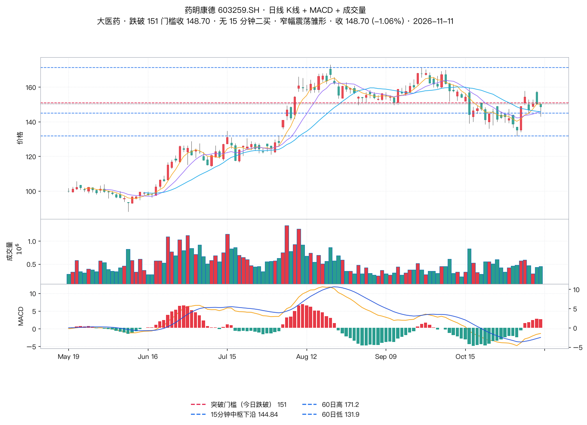
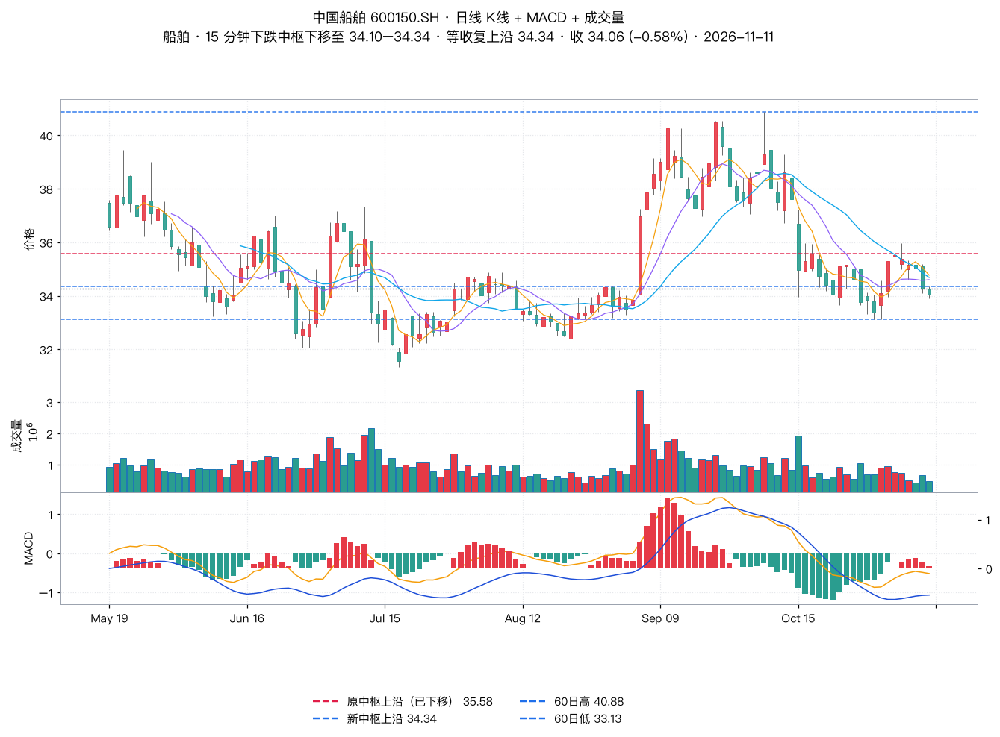
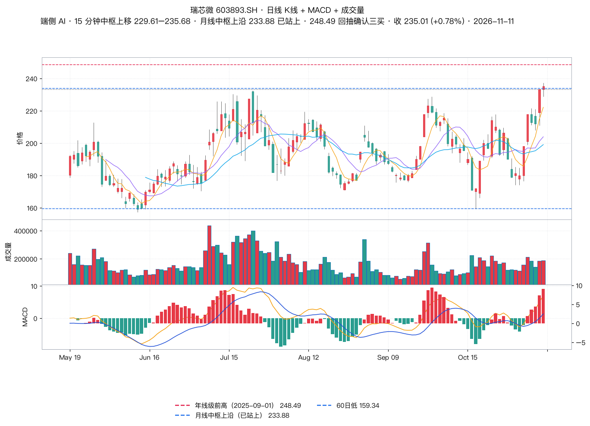
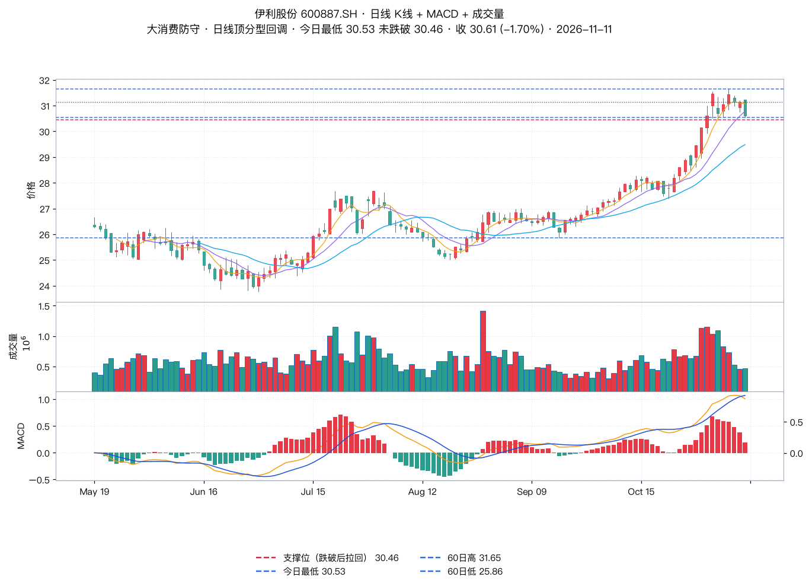
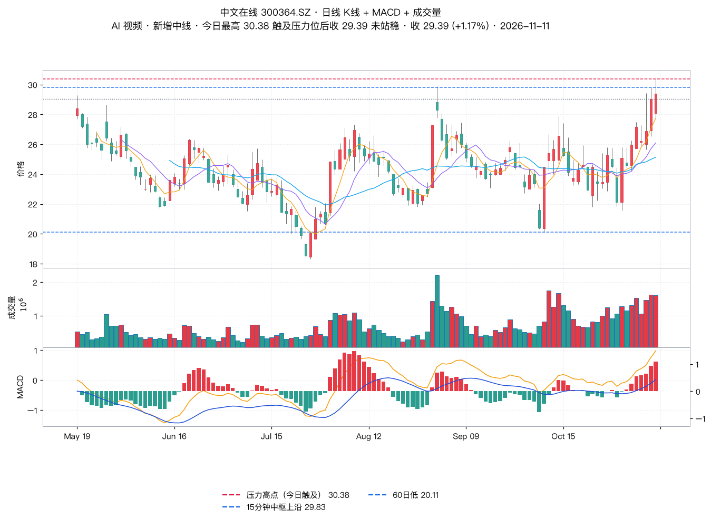
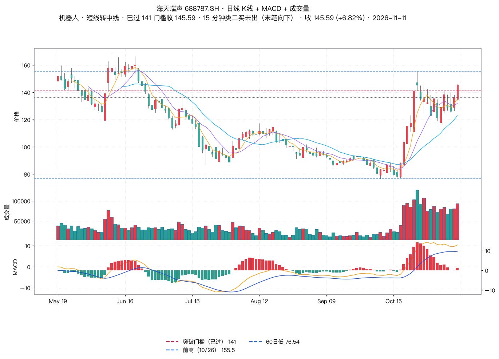
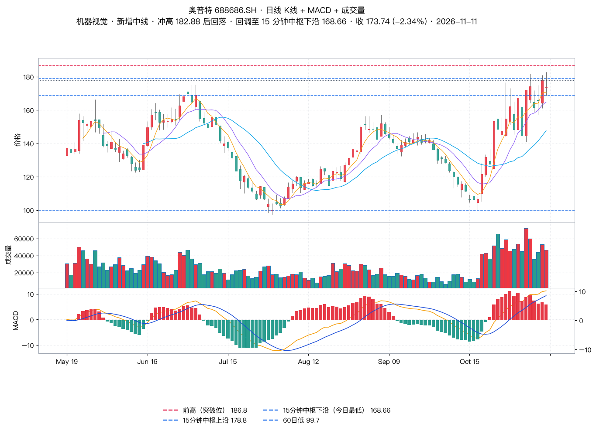
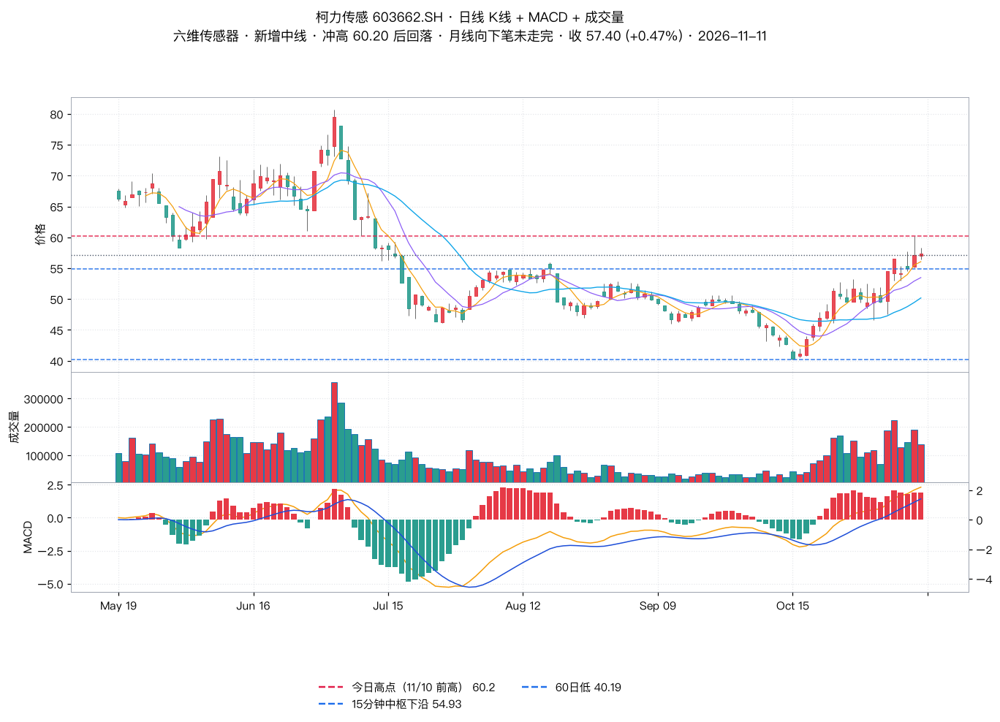
| 标的 | 题材 | 收盘 | 老师定性 | 15 分钟中枢（实测） | 关键位 / 止损 | 动作 |
|---|---|---|---|---|---|---|
| 兆易创新 603986 | 存储 / 半导体 | 259.62 (+6.15%) | 无买点，震荡向上拉升，没出 15 分钟底分型三买 | 241.22–248.88 末笔向上（11-11 14:30，力度 19.36） |
继续等待 15 分钟底分型三买；自行参与者设止损 249 附近 实测：今日 +6.15%，盘中最低 241.22 已跌破 249 止损参考位，尾盘拉回收 259.62。15 分钟结构上：11/11 09:45 向下笔止于 241.22（未破 11/09 新低 237.28），随后向上笔力度 19.36 > 前笔 7.66（无顶背驰）→ 底分型三买的力度要素在尾盘 14:30 才补齐，收盘已上穿中枢上沿 248.88；老师盘中给出「没出三买」判断时该结构尚未完成，时点差异，不是矛盾 |
等三买 / 守 249 |
| 海天瑞声 688787 | 机器人 | 145.59 (+6.82%) | 转中线跟踪，短线剔除 | 125.85–129.0 | 见中线表（等 15 分钟类二买结构，今日未出） | 转中线 |
| 云铝股份 000807.SZ | 非热点 | 23.41 (-1.31%) | 震荡向下、无买点，走势回到下沿 | 24.45–25.09 末笔向下（11-11 10:15，力度 2.09） |
先观察是否止跌，辅助日线有力度底分型出现后小级别做共振机会 实测：今日 -1.31%，最低 23.0 创 60 日新低且跌破 15 分钟中枢下沿 24.45，收 23.41 仍在中枢下方；末笔向下（力度 2.09）→ 「回到下沿」已变成「跌破下沿」，止跌尚未出现 |
等止跌 |
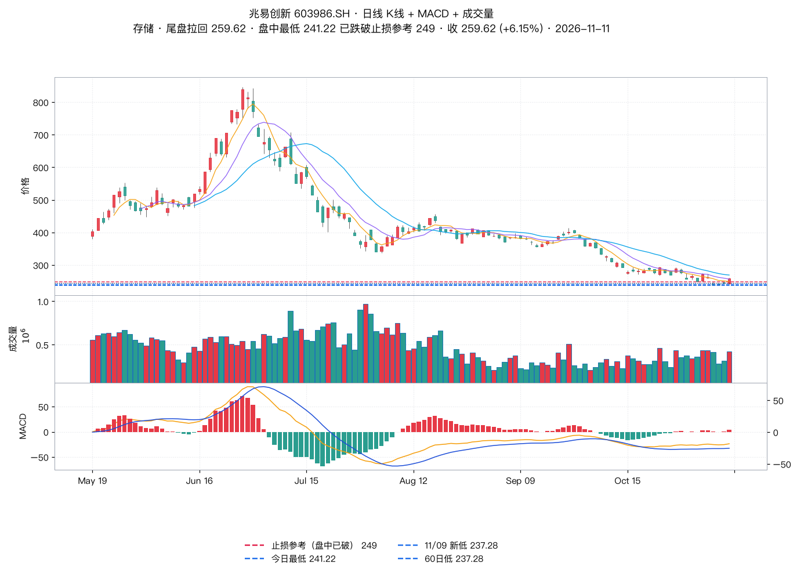
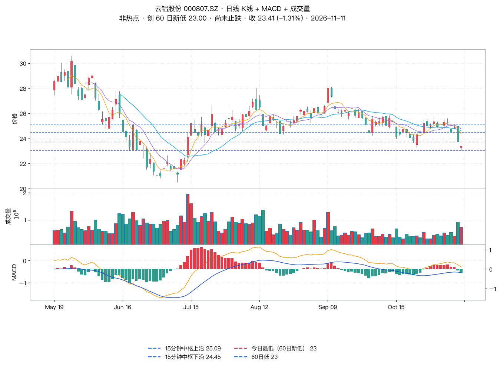
| 变化 | 标的 | 老师处理 | 我方观察点 |
|---|---|---|---|
| 新增中线 | 中文在线 300364 | AI 视频，体量大、业绩不好，月线强势震荡、出月线底分型 | 突破压力高点 30.38 → 15 分钟底分型三买；今日最高恰好触及 30.38 后回落 |
| 短线转中线 | 海天瑞声 688787 | 机器人，月线中枢震荡，第一波上涨猛，不追 | 15 分钟类二买结构；今日 +6.82% 已过 141 但末笔转下，未出类二买 |
| 新增中线 | 奥普特 688686 | 机器视觉，月线卡前高震荡 | 回调到中枢下沿找止跌，或突破 186.8 出三买；今日已回调至下沿 168.66 |
| 新增中线 | 柯力传感 603662 | 六维传感器，月线假突破观察 | 日线顶分型调整后的止跌机会；月线向下笔未走完 |
| 短线剔除 | 海天瑞声 688787 | 转中线跟踪 | — |
| 短线剔除（11/10） | 江波龙 301308 | 无买点、既没创新低也没共振 | 已不在老师跟踪池中 |
| 短线放弃（11/10） | 华策影视 300133 | 出不了三买直接上冲 | 已不在老师跟踪池中 |
| 名称 | 代码 | 收盘 | 涨跌幅 | 60 日涨幅 | 距 60 日高 | 近 5 日涨幅 |
|---|---|---|---|---|---|---|
| 药明康德 | 603259.SH | 148.70 | -1.06% | -6.5% | -14.3% | -0.1% |
| 中国船舶 | 600150.SH | 34.06 | -0.58% | 0.5% | -17.8% | -4.1% |
| 瑞芯微 | 603893.SH | 235.01 | +0.78% | 10.1% | -1.0% | 18.7% |
| 伊利股份 | 600887.SH | 30.61 | -1.70% | 18.1% | -3.3% | -0.3% |
| 中文在线 | 300364.SZ | 29.39 | +1.17% | 15.8% | -3.3% | 13.1% |
| 海天瑞声 | 688787.SH | 145.59 | +6.82% | 30.6% | -6.4% | 12.7% |
| 奥普特 | 688686.SH | 173.74 | -2.34% | 48.5% | -5.0% | 1.0% |
| 柯力传感 | 603662.SH | 57.40 | +0.47% | 6.5% | -4.7% | 5.2% |
| 兆易创新 | 603986.SH | 259.62 | +6.15% | -37.2% | -43.0% | -4.3% |
| 云铝股份 | 000807.SZ | 23.41 | -1.31% | -14.7% | -19.6% | -7.5% |
| 凯莱英 | 002821.SZ | 152.30 | +0.36% | -13.0% | -21.6% | 2.3% |
| 昭衍新药 | 603127.SH | 46.18 | +0.00% | -9.7% | -16.3% | 4.7% |
按「剔除涨幅大、保留位置不高」双条件筛：药明康德（60 日 -6.5%、距 60 日高 -14.3%，老师给出窄幅震荡雏形 + 凯莱英共振思路）、中国船舶（距 60 日高 -17.8%，等收复上沿）、云铝股份（距 60 日高 -19.6%、60 日 -14.7%，位置最低但今日创新低）、奥普特（距 60 日高 -5.0%，回调至中枢下沿）、柯力传感（距 60 日高 -4.7%，月线假突破观察）。
当日涨幅已大、按逻辑应剔除：兆易创新（+6.15%）、海天瑞声（+6.82%）——注意这两只恰恰是「位置不高」的（兆易创新距 60 日高 -43.0%、60 日涨幅仍为 -37.2%），剔除理由是当日涨幅而非位置，所以它们是「位置低但今日已涨」的短期追高风险，不是中线候选。
老师原话：港股因无涨跌幅限制，操作建议设止损；流动性不好，大资金慎入。香港市场暂无个股推荐，先耐心观察等待。
| 项目 | 老师原文 | 实测数据 | 判定 |
|---|---|---|---|
| 指数温和上涨、成长更强 | 创业板和科创板涨幅力度稍大 | 创业板 +3.11%、科创50 +2.80% vs 上证 +0.46%、沪深300 +0.41% | 一致 |
| 成交量略放 | 成交量略放 | 全 A 16886.9 亿 vs 前日 15167.5 亿（+11.30%） | 一致 |
| 均量线还是空头排列 | 均量线还是空头排列 | 上证 5 日均量 462,808,343 < 20 日均量 470,975,150 | 一致 |
| 15 分钟下跌中枢延伸 | 15 分钟依旧维持下跌中枢延伸 | 中枢 3664.4–3689.91，自 11/05 未变、未选择方向 | 一致 |
| 向上需破 3750 | 向上需突破压力 3750 点 | 今日最高 3689.65，未触发 | 未触发 |
| 向下要创新低出底背驰 | 向下要创新低 | 今日最低 3650.31 < 11/09 前低 3653.05，创新低成立（幅度 2.74 点），收盘拉回中枢 | 已触发（微幅），底背驰未确认 |
| 1 分钟中枢尝试向上离开力度不够 | 力度不够、效果不好、延续性不强 | 上证自低 3650.31 拉起收 3680.64，未站稳全天高 3689.65，涨幅 +0.46% 远弱于创业板 | 旁证一致（1 分钟结构不可复算） |
| 同花顺全A 站上 20 日均线、破 1325 出三买 | 两个具体条件 | 本机无 881001 数据源（东财限流 + tushare 无该指数），1325 点无法核验；替代口径：全 A 放量 11.3%、涨 3538/跌 1827 | 无法直接核验 |
| 市场温度 35 度 | 第一天上 30 度 | 11/09 为 25 度 → 11/10 25 度 → 11/11 35 度，方向一致 | 一致 |
| 人形机器人一类热点、炒增量 | 人形机器人炒的是增量，围绕数据采集 | 机器人零部件链涨停 28 只（专用机械 13 + 汽车配件 10 + 机械基件 5），且为中小市值扩散 | 一致 |
| 板块强弱排序 | 人形机器人＞AI 视频＞算力硬件 | 篮子均值：算力硬件 +7.08% ＞ 人形机器人 +2.31% ＞ AI 视频 +1.41%；涨停链算力 35 只 ＞ 机器人 28 只 | 不一致（算力硬件实测最强） |
| 端侧 AI 比超跌半导体更强 | 端侧 AI 比超跌的半导体等更强一些 | 端侧篮子 -0.96% ＜ 半导体 +1.61%；但老师点名的瑞芯微 +0.78% | 篮子口径相反，指定标的一致 |
| AI 视频活跃但上不了热点榜、仍有顶背驰风险 | 无法上热点榜，需观察是否顶背驰回头 | 篮子均值 +1.41%，涨停级仅 1 只，强度远低于算力/机器人 | 一致 |
| 半导体先看成超跌反弹、防转三卖 | 前期跌幅大反弹力度稍大，转强需先突破压力 | 半导体篮子 +1.61%；主力涨幅来自兆易（60 日涨幅 -37.2%）、澜起等前期深跌品种 | 一致 |
| 玄学链防范资金撤出 | 不作为重点推荐，防范资金撤出 | 涨停 8 只(11/09) → 4 只(11/10) → 4 只(11/11)，成分换血、仅 2 板、羊字辈今日转跌 | 一致 |
| 药明康德无 15 分钟二买、窄幅震荡雏形 | 无买点、窄幅震荡雏形 | 末笔向下、无底分型二买；收 148.7 回到中枢 144.84–152.8 内 | 一致 |
| 药明康德等凯莱英/昭衍共振 | 等共振结构 | 今日药明康德 -1.06% vs 凯莱英 +0.36%、昭衍新药 0.00% | 共振今日不成立 |
| 中国船舶等收复上沿 | 等收复上沿后做 15 分钟共振上涨中枢 | 中枢已由 [35.00–35.58] 下移至 34.1–34.34，今日高 34.34、低 33.92、收 34.06 | 一致（目标位需更新为 34.34） |
| 瑞芯微等回抽确认 248.49 / 拉回中枢共振 | 两个条件 | 三买未成立（距 248.49 5.7%）；拉回中枢共振今日成立（中枢上移至 229.61–235.68） | 一致（一条件已成立） |
| 伊利股份等跌破 30.46 再拉回 | 等跌破支撑 30.46 再拉回 | 今日最低 30.53，距 30.46 差 0.07 元未破 | 一致（条件未触发） |
| 中文在线等破 30.38 出三买 | 突破压力高点 30.38 | 今日最高 30.38 恰好触及，收盘 29.39 回落未站稳；月线强势震荡、出月线底分型成立 | 触及未突破 |
| 海天瑞声等 15 分钟类二买 | 等 15 分钟做出类二买结构 | 今日 +6.82% 至 145.59，冲高后末笔转下，类二买未出 | 一致（未触发） |
| 奥普特等破 186.8 或回调到中枢下沿 | 两个条件二选一 | 186.8 未触（最高 182.88）；回调至中枢下沿 168.66 今日到位，止跌未确认 | 一致（一条件到位） |
| 柯力传感月线假突破观察 | 月线向下突破后尝试被拉回 | 月线末笔仍是 2025-02 至今向下笔（高 90.89 低 40.19），今日冲高 60.20 后回落 | 一致 |
| 兆易创新没出 15 分钟底分型三买 | 没出三买 | 盘中确未出；但尾盘 14:30 向下笔止于 241.22 后向上笔力度 19.36 > 前笔 7.66，结构在收盘前才补齐；且盘中最低 241.22 已破 249 止损位 | 时点差异（收盘成立，盘中未成立） |
| 云铝股份回到下沿、等止跌 | 先观察是否止跌 | 最低 23.0 跌破 15 分钟中枢下沿 24.45 并创 60 日新低，末笔向下 | 一致（且比老师描述更弱） |
| 潜在强势股清单 | 只给筛选逻辑，未列标的 | 本纪要用当日涨停结构 + 位置数据补做 | 原文缺清单 |
stk_mins 本次配额被限为 1 次/小时，不可用；新浪 K 线末日收盘与 Tushare 日线逐只一致，已交叉验证）。板块数字为测算口径，非官方板块指数。stk_mins 复算的上证/瑞芯微/伊利等中枢完全一致，可比。原文来源：都业华《高级班》2026-11-11 收评，执业编号 A0400626100004。以上内容仅供参考，不作为买卖依据，据此操作风险自担。投资有风险，入市需谨慎！历史案例不代表未来收益。
本纪要为原文的结构化整理 + 独立数据核验，核验结论基于公开行情数据计算，不构成任何投资建议；与老师原文口径不一致之处已在「偏差记录」逐条标注。